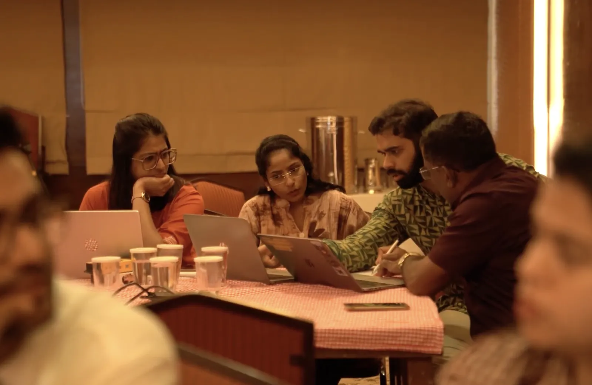
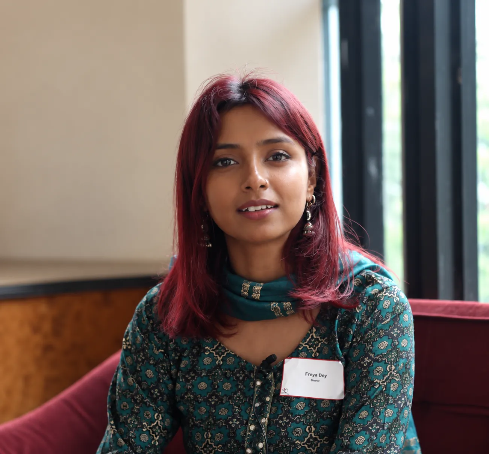

Cross-sectorOperationalizing Theory of Change
Dasra and SVP India
Conducted capacity building workshops to help 16 organizations in their cohort map their ToC to measurable indicators.
It’s always inspiring to see how Goalkeep conducts their sessions. Their attention to detail is very high and the approach involved forming strong relationships with the participating NGOs, which is why we like having them as an MEL partner.”

Freya Ray · Dasra